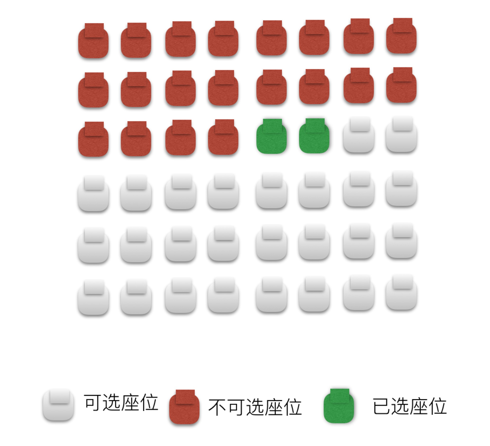
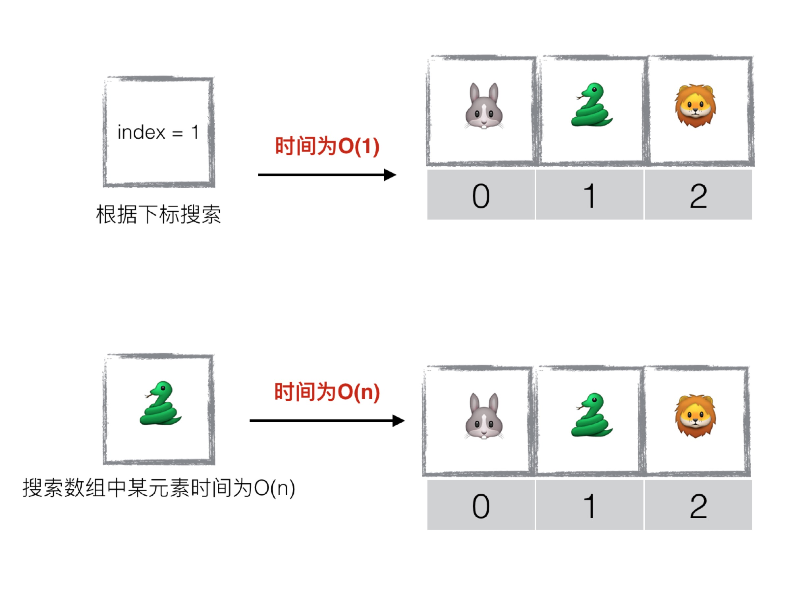

还是用选电影票举例: 我们想选一个3个连在一起的座位。下图虽然剩余可选座位有6个， 但是并没有一个3个座位连在一起，因此也就无法在这个电影院(内存条)中申请座位(数组)

简介
数组(Array)是一种线性表结构，它用一组连续内存来存储一组具有相同类型的数据。 通过下标来访问数组中的数据元素。
连续内存
就如同我们去电影院看电影时，你跟你女朋友一定会选两个连在一起的座位, 而不是分开来坐。
数组的存储方式也是一样，当我们声明一个数组时，需要指定数组的容量大小， 然后根据指定的容量大小，系统会在内存条中预先分配出一块连续的内存空间。
相同类型
一个数组中所存储的数据类型，必须属于同一种类型。比如下面申请的数组array只能存储int类型数据:int[] array = new int[10]; // 申请一块可以容纳10个int类型的连续内存空间
数组优缺点
缺点：空间使用率不高
优点：访问极快
计算机会给每个内存单元分配一个物理地址，然后计算机通过这些物理地址来访问内存中的数据。 比如下图中地址1000的地址上是“兔子”, 而每一个单元占8个单位，所以"狮子"的地址我们可以很容易 的计算出来 1000 + 8*2 = 1016，也就是说array[1016] = "狮子"。
同样，由于数组中的内存是连续的，并且类型是固定的，所以可以在O(1)时间内， 通过下标读取数组中的任何元素，因此它的时间效率是很高的。 具体实现原理就是， 当声明数组时，数组会保存一个基地址 base_address，当计算机需要访问数组中的某个元素是， 就可以通过下面的寻址公式，计算出该元素的内存地址：
arr[i]_address = base_address + i * data_type_size
其中i代表需要访问的元素下标，base_address代表首地址，data_type_size代表每个元素占用的内存大小，比如数组中存储的是java的int类型，所以data_type_size也就是4个字节。
注意：此处有坑
经常有面试官会问： 数组中查询某元素的时间复杂度是多少 ? 很多童鞋会马上轻松写意的回答: O(1)。
这种回答并非完全正确的。其实数组的访问快是基于下标访问的，但是如果需求是在数组中查找是否有某元素时，它的时间复杂度还是O(n)。
数组应用场景：HashTable
刚才我们说了，虽然数组的随机访问时间复杂度为O(1)，但是实际在数组中查找某一元素时的时间复杂度仍然是O(n). 这就没有充分体现数组的优势了。如下图所示:
对待上面这样的情况，其实只需要在其基础上多做一步，将所需要查找的元素转化为它所对应的位置下标， 然后根据此下标再去访问数组的时间复杂度就是O(1)了。
上面的优化过程，其实就是后面章节讲解的HashTable(哈稀表)数据结构的基础原理。 可以看出，HashTable(哈稀表)的基本原理，就是在数组的基础上稍加扩展后实现的。 具体细节请关注后续章节
------------------------------------------
作者：Danny_姜
原文：https://blog.csdn.net/zxm317122667/article/details/83781343
版权声明：本文为博主原创文章，转载请附上博文链接！